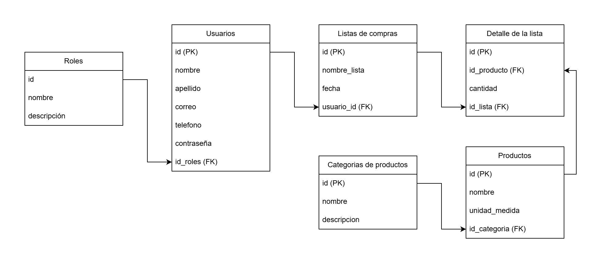

Reglas de negocio
Definiciones fundamentales para el uso y la gestión de la aplicación de listas de compras Apunta-todo.
Registro de usuario
-
El usuario deberá registrarse en la plataforma proporcionando un correo electrónico válido y una
contraseña segura.
Esto garantiza la autenticidad y seguridad de la cuenta del usuario.
-
En caso de olvido de la contraseña, el usuario podrá utilizar la función de Recuperar
Contraseña proporcionando su correo electrónico registrado.
Se enviará un enlace de restablecimiento de contraseña al correo electrónico del usuario.
Inicio de sesión
-
El usuario deberá iniciar sesión utilizando su correo electrónico y contraseña registrados.
Esto permite el acceso seguro a las funcionalidades personalizadas de la aplicación.
-
Si el usuario ingresa credenciales incorrectas, se mostrará un mensaje de error indicando que el
correo electrónico o la contraseña son inválidos.
Esto ayuda a mantener la seguridad de la cuenta y evita accesos no autorizados.
Gestión de listas y productos
-
El usuario, tras iniciar sesión, tendrá acceso a un menú de opciones para la gestión de sus listas
de mercado.
Las acciones disponibles incluyen: crear, nombrar, editar y eliminar listas de mercado personales.
-
Al utilizar la opción de Crear Lista, el usuario podrá ingresar el nombre de un producto y
deberá seleccionar su categoría correspondiente (ej. Lácteos, Carnes, Granos).
La selección de categoría facilita la organización y la experiencia de compra.
Historial y reutilización de compras
-
Se mantendrá un Historial de Compras que el usuario podrá utilizar para dos propósitos
principales: reutilizar listas de mercado anteriores y verificar compras pasadas.
Esta funcionalidad optimiza el tiempo y facilita la planificación de futuras compras.
Usuarios y seguridad de la información
-
Se establecerá un sistema de Roles de Usuario para diferenciar los niveles de acceso y permisos
dentro de la aplicación.
Esto asegura la integridad de los datos y la funcionalidad específica para cada tipo de usuario.
-
El uso de datos personales (nombre y correo electrónico) se limitará estrictamente a la gestión y
operación de la cuenta del usuario.
Estos datos no serán compartidos ni utilizados para fines no relacionados con la funcionalidad de la aplicación.
Modelo Entidad Relación
Definicion de nuestras entidades y relaciones para Apunta-todo.
Script Base de Datos
Script para la creación de la base de datos, tablas y consultas básicas.
-
Crear la base de datos apunta todo
CREATE DATABASE bd_apunta_todo; -
Usar la base de datos apunta todo
USE bd_apunta_todo; -
Crear la tabla de roles
CREATE TABLE tbl_roles ( id_rol INT IDENTITY(1,1) PRIMARY KEY, nombre VARCHAR(50) NOT NULL UNIQUE, descripcion VARCHAR(100) ); -
Crear la tabla de usuarios
CREATE TABLE tbl_usuarios ( id_usuario INT IDENTITY(1,1) PRIMARY KEY, id_rol INT NOT NULL, nombre VARCHAR(100) NOT NULL, apellido VARCHAR(100) NOT NULL, telefono VARCHAR(12) NOT NULL, email VARCHAR(100) NOT NULL UNIQUE, contraseña VARCHAR(10) NOT NULL, CONSTRAINT fk_usuarios_rol FOREIGN KEY (id_rol) REFERENCES tbl_roles(id_rol) ); -
Crear la tabla de categorias
CREATE TABLE tbl_categorias ( id_categoria INT IDENTITY(1,1) PRIMARY KEY, nombre VARCHAR(100) NOT NULL, descripcion VARCHAR(100) ); -
Crear la tabla de productos
CREATE TABLE tbl_productos ( id_producto INT IDENTITY(1,1) PRIMARY KEY, nombre VARCHAR(100) NOT NULL, unidad_de_medida VARCHAR(50) NOT NULL, id_categoria INT NOT NULL, CONSTRAINT fk_productos_categoria FOREIGN KEY (id_categoria) REFERENCES tbl_categorias(id_categoria) ); -
Crear la tabla de las listas de compras
CREATE TABLE tbl_listas ( id_lista INT IDENTITY(1,1) PRIMARY KEY, id_usuario INT NOT NULL, nombre VARCHAR(150) NOT NULL, fecha_crecion DATE NOT NULL, CONSTRAINT fk_listas_usuario FOREIGN KEY (id_usuario) REFERENCES tbl_usuarios(id_usuario) ); -
Crear los elementos de la lista (El detalle)
CREATE TABLE tbl_items ( id_item INT IDENTITY(1,1) PRIMARY KEY, id_lista INT NOT NULL, id_producto INT NOT NULL, cantidad DECIMAL(10,2) NOT NULL, CONSTRAINT fk_items_lista FOREIGN KEY (id_lista) REFERENCES tbl_listas(id_lista), CONSTRAINT fk_items_producto FOREIGN KEY (id_producto) REFERENCES tbl_productos(id_producto) ); -
Insertar roles
INSERT INTO tbl_roles (nombre, descripcion) VALUES ('Administrador', 'El que gestiona a los demas usuarios'), ('Usuario', 'Los clientes o usuarios que van a crear sus listas de compra'); -
Insertar usuarios
INSERT INTO tbl_usuarios (id_rol, nombre, apellido, telefono, email, contraseña) VALUES (1, 'Larysa', 'Guerra', '+57876543456', 'larysa.guerra@correo.com', '12345678'), (1, 'Luz', 'Guisao', '+57320756984', 'luz.guisao@correo.com', '12345678'), (1, 'Yetty', 'Sanz', '+57876321526', 'yetty.sanz@correo.com', '12345678'), (2, 'Laura', 'Martínez', '3004567890', 'laura.martinez@correo.com', 'pass1234'), (2, 'Carlos', 'Gómez', '3012345678', 'carlos.gomez@correo.com', 'abc12345'), (2, 'Valentina', 'Hernández', '3029876543', 'valentina.hernandez@correo.com', 'clave2025'), (2, 'Andrés', 'Ramírez', '3041239876', 'andres.ramirez@correo.com', 'qwerty12'), (2, 'Daniela', 'Suárez', '3053217890', 'daniela.suarez@correo.com', 'dan2024ab'), (2, 'Javier', 'Cárdenas', '3107654321', 'javier.cardenas@correo.com', 'secure01'), (2, 'Mariana', 'Castillo', '3119988776', 'mariana.castillo@correo.com', 'mari2025'); -
Insertar las categorias de los productos
INSERT INTO tbl_categorias (nombre, descripcion) VALUES ('Frutas', 'Productos frescos de origen vegetal, consumidos normalmente como alimentos dulces o saludables.'), ('Verduras', 'Hortalizas y vegetales utilizados en preparaciones diarias como ensaladas, sopas y guarniciones.'), ('Carnes', 'Productos de origen animal ricos en proteína como res, cerdo, pollo y pescado.'), ('Lácteos', 'Productos derivados de la leche como queso, yogurt, mantequilla y crema.'), ('Aseo', 'Productos utilizados para la limpieza personal y del hogar.'), ('Granos', 'Alimentos secos como arroz, lentejas, fríjoles, garbanzos y otros no perecederos.'), ('Panadería', 'Productos elaborados con harina como pan, tortas, galletas, hojaldres y bollería.'), ('Bebidas', 'Líquidos de consumo como jugos, gaseosas, agua, café, té y bebidas energéticas.'), ('Snacks', 'Alimentos listos para consumir como papas fritas, galletas, frutos secos y pasabocas.'), ('Congelados', 'Alimentos preservados mediante congelación, como verduras, carnes, pizzas y comidas listas.'); -
Insertar los productos con su categoria
INSERT INTO tbl_productos (nombre, unidad_de_medida, id_categoria) VALUES ('Banano', 'kg', 1), ('Lechuga crespa', 'unidad', 2), ('Carne molida', 'kg', 3), ('Queso mozzarella', 'kg', 4), ('Detergente líquido', 'litro', 5), ('Lentejas', 'kg', 6), ('Pan integral', 'unidad', 7), ('Jugo de naranja', 'litro', 8), ('Maní salado', 'paquete', 9), ('Vegetales congelados', 'paquete', 10); -
Insertar la lista de compra
INSERT INTO tbl_listas(id_usuario, nombre, fecha_crecion) VALUES (5, 'Compras semana 1 (Laura)', '2025-10-10'), (5, 'Compras semana 2 (Laura)', '2025-11-17'), (6, 'Compras semana 1 (Carlos)', '2025-08-06'), (6, 'Compras semana 2 (Carlos)', '2025-09-20'), (7, 'Compras semana 1 (Valentina)', '2025-10-15'), (7, 'Compras semana 2 (Valentina)', '2025-11-27'), (8, 'Compras semana 1 (Andrés)', '2025-04-11'), (8, 'Compras semana 2 (Andrés)', '2025-06-02'), (9, 'Compras semana 1 (Daniela)', '2025-08-15'), (9, 'Compras semana 2 (Daniela)', '2025-09-19'), (10, 'Compras semana 1 (Javier)', '2025-10-11'), (10, 'Compras semana 2 (Javier)', '2025-11-19'), (11, 'Compras semana 1 (Mariana)', '2025-02-05'), (11, 'Compras semana 2 (Mariana)', '2025-06-04'); -
Insertar el detalle de la lista 1
INSERT INTO tbl_items (id_lista, id_producto, cantidad) VALUES (1, 1, 2.0), (1, 2, 1.0), (1, 7, 1.0), (1, 8, 1.0); -
Insertar el detalle de la lista 2
INSERT INTO tbl_items (id_lista, id_producto, cantidad) VALUES (2, 3, 1.5), (2, 4, 0.5), (2, 9, 1.0), (2, 5, 1.0); -
Insertar el detalle de la lista 3
INSERT INTO tbl_items (id_lista, id_producto, cantidad) VALUES (3, 2, 1.0), (3, 6, 1.0), (3, 1, 2.0), (3, 10, 1.0); -
Insertar el detalle de la lista 4
INSERT INTO tbl_items (id_lista, id_producto, cantidad) VALUES (4, 7, 1.0), (4, 3, 1.0), (4, 8, 2.0), (4, 9, 1.0); -
Insertar el detalle de la lista 5
INSERT INTO tbl_items (id_lista, id_producto, cantidad) VALUES (5, 1, 1.5), (5, 4, 0.5), (5, 2, 1.0), (5, 7, 1.0); -
Insertar el detalle de la lista 6
INSERT INTO tbl_items (id_lista, id_producto, cantidad) VALUES (6, 6, 1.0), (6, 10, 1.0), (6, 3, 1.0), (6, 9, 2.0); -
Consultas generales
-- Leer roles SELECT * FROM tbl_roles; -- Leer usuarios SELECT * FROM tbl_usuarios; -- Leer categorias SELECT * FROM tbl_categorias; -- Leer productos SELECT * FROM tbl_productos; -- Leer listas SELECT * FROM tbl_listas; -- Leer detalle de las listas SELECT * FROM tbl_items; -- Leer las listas, buscando por el id de usuario SELECT * FROM tbl_listas WHERE tbl_listas.id_usuario = 5; -- Funciones de agregado -- (SUM) Sumar la cantidad de productos que hay en una lista SELECT SUM(cantidad) AS cantida_productos FROM tbl_items WHERE id_lista = 1; -- (COUNT) Contar cuantos productos ha agregado por id de la lista SELECT COUNT(*) AS total_productos FROM tbl_items WHERE id_lista = 5; -- (MIN) Menor cantidad un producto en cualquier lista. SELECT MIN(cantidad) AS cantidad_minima FROM tbl_items; -- (MAX) Mayor cantidad un producto en cualquier lista. SELECT MAX(cantidad) AS cantidad_maxima FROM tbl_items; -- JOIN -- Unir los items de una lista con los nombres de producto, buscando por el id de la lista SELECT tbl_productos.nombre AS producto, tbl_items.cantidad, tbl_productos.unidad_de_medida AS unidad FROM tbl_items INNER JOIN tbl_productos ON tbl_items.id_producto = tbl_productos.id_producto WHERE tbl_items.id_lista = 1; -- Agrupar y contar cuantas listas a creado cada usuario SELECT tbl_usuarios.nombre + ' ' + tbl_usuarios.apellido AS nombre, COUNT(tbl_listas.id_lista) AS total_listas FROM tbl_usuarios LEFT JOIN tbl_listas ON tbl_usuarios.id_usuario = tbl_listas.id_usuario GROUP BY tbl_usuarios.id_usuario, tbl_usuarios.nombre, tbl_usuarios.apellido;